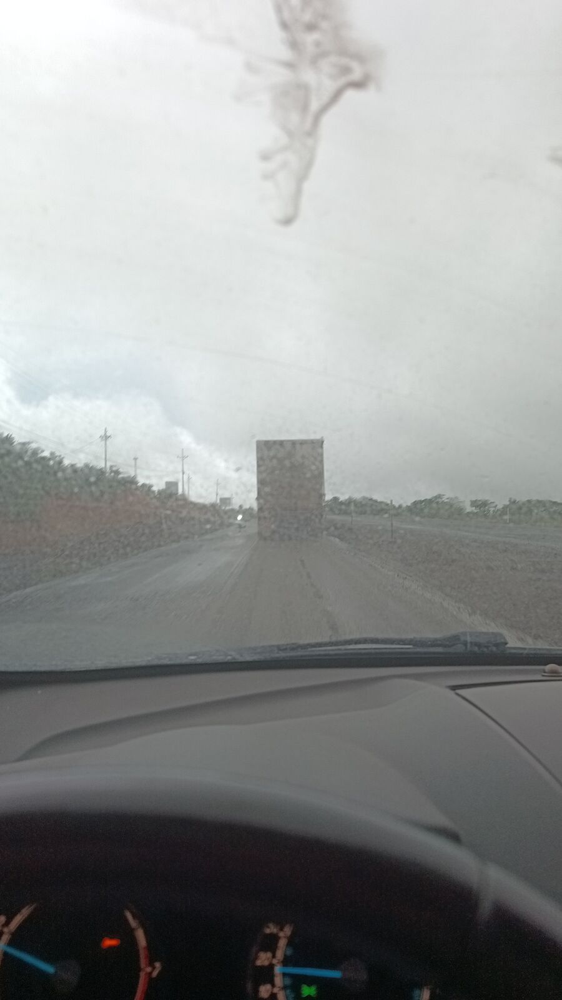
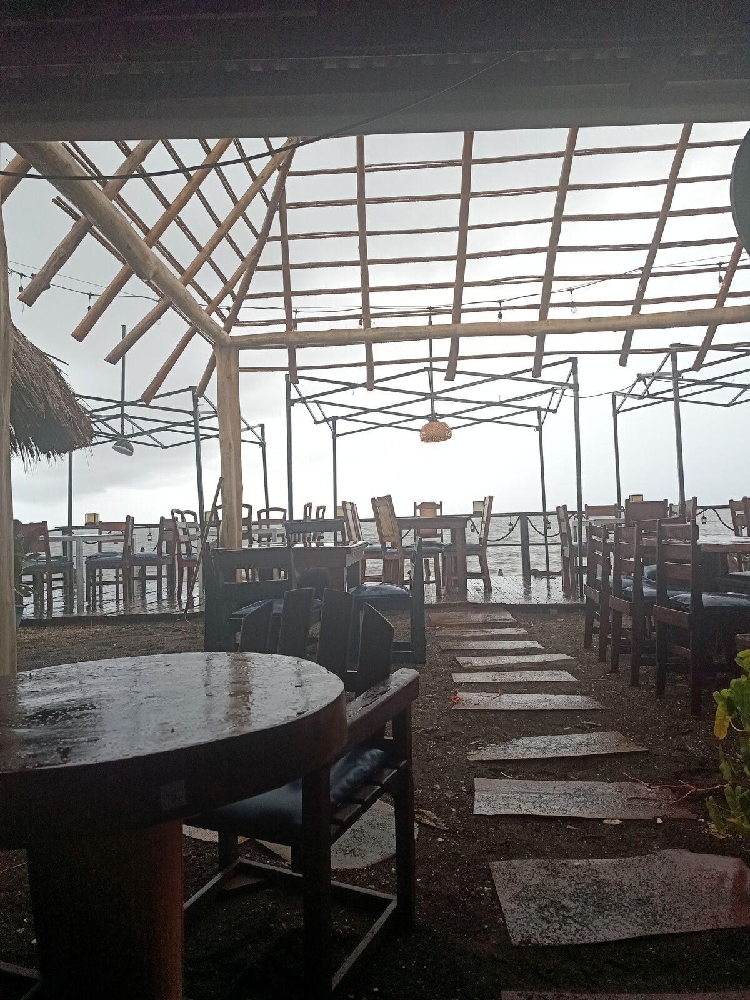
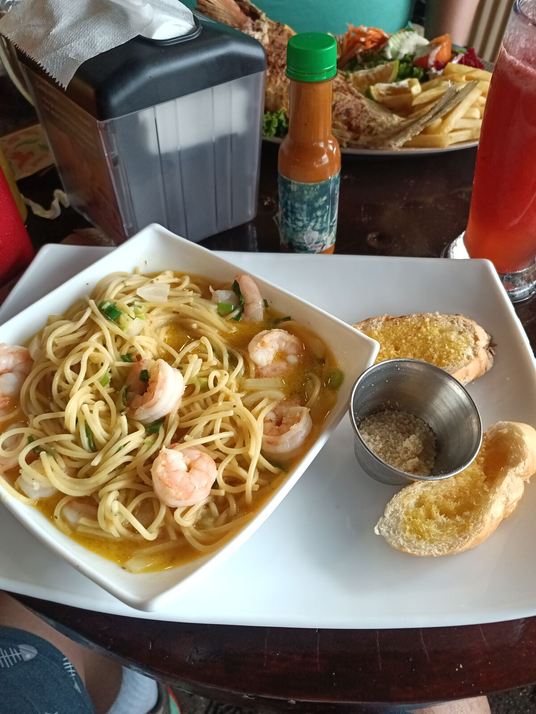
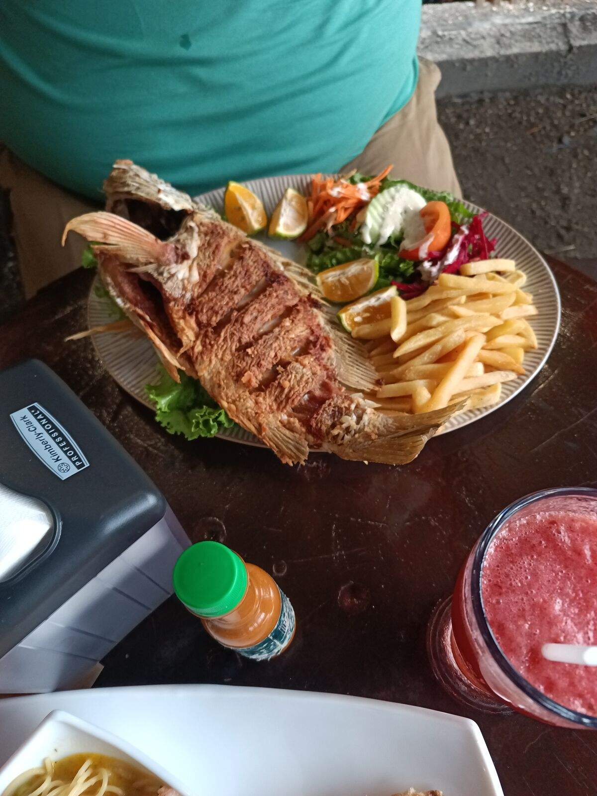
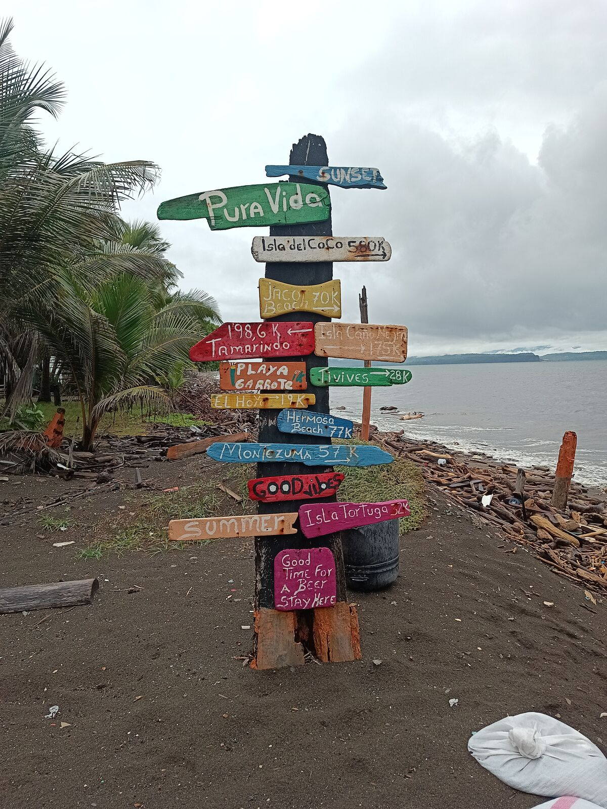
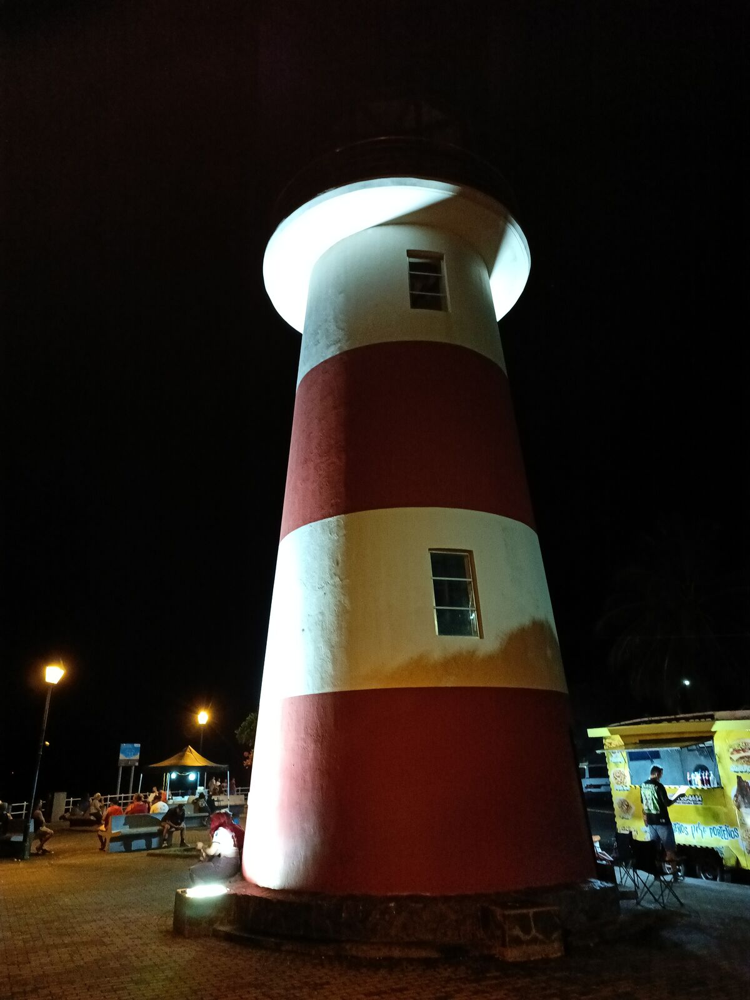
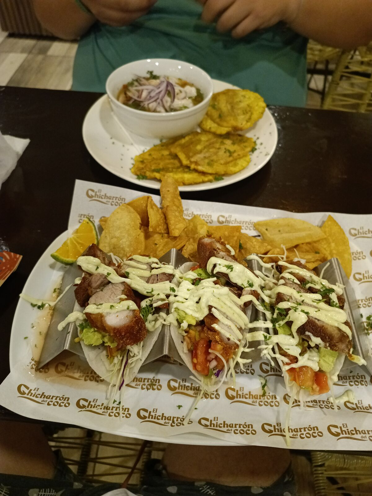

等等，哥斯达黎加的麦当劳卖米饭配豆子？
今天我们像每天一样早起；也就是说，我九点前，何塞早上六七点 哈哈哈。前一天晚上，我们聊了中美洲各国之间的文化差异。就像我在其他文章里说的，我们比自己愿意承认的更相像，但有些东西差别很明显，其中之一就是加洛平托（米饭配豆子）。营销上都说加洛平托是哥斯达黎加的，但我觉得在尼加拉瓜看到的加洛平托，比目前在哥斯达黎加看到的还多。
我们被惯坏了：前几天都在尼加拉瓜的 HC Liri 吃早餐，那里样样都是十分满分。早餐特别好吃，尤其是撒了盐和胡椒的番茄，不知道是番茄本身还是怎么回事，反正好吃极了。今天呢，我们能找到的早餐只有快餐，结果就去了麦当劳 哈哈哈哈。
然后它就出现了。哥斯达黎加人和尼加拉瓜人争了好多年加洛平托到底是谁的，结果麦当劳跑来直接贴上了自己的牌子：McPinto。米饭配豆子，但是麦当劳出品 哈哈哈哈。我到现在还不敢相信，你们知道最糟的是什么吗？它还挺好吃。鸡蛋配他们放在松饼里的那种小香肠饼，相当美味。
既然今天吃得比骑得多，我们就推出一个评分系统：Ada 评分。Ada 是我的小猫，就是在圣胡安德尔苏尔被拿来当鱼的尺子的那只。从今天起，我们吃饭的每个地方都会得到 1 到 5 只 Ada：
🐱 最好别靠近。
🐱🐱 实在没别的选择再说。
🐱🐱🐱 还行。
🐱🐱🐱🐱 值得一去。
🐱🐱🐱🐱🐱 必去。
🐱🐱🐱 麦当劳（McPinto）：5 只 Ada 里得 3 只。 不值得专门为它来哥斯达黎加，但 McPinto 值得拍张照。
我们 11 点离开住处，前往蓬塔雷纳斯。这几天一直多云、有暴风雨：夜里下了雨，利比里亚上午也下了一阵。Waze 显示 90 公里，一个半小时。出发后我们又一次注意到了道路的差别；抱歉，我还是对尼加拉瓜的路印象深刻 哈哈哈。一个 Facebook 上的朋友告诉我，他十年前走过同样的路线，那时尼加拉瓜就已经有中美洲最好的公路了。
第一个小时过后，我们遇上了一小段、小——小——的大约 30 公里正在重修的路段。走一点，停十分钟，再走一点。我们俩一直盯着 Waze：
——它显示多久？
——一小时四十分。
——什么叫一小时四十分？我们都已经走了 30 公里了。
我们完全不知道自己陷进了什么 哈哈哈哈。
结果呢，从佩尼亚斯布兰卡斯到圣何塞的公路正在重建，再加上雨下得很大。所以没错，Waze 是对的：本来以为能在蓬塔雷纳斯吃午饭，结果快下午四点才到 Código Beach Club。我跟何塞说，知道值得，堵车我也不介意。确实值得：我吃撑了。

我点了蒜香虾仁意面，很好吃，何塞这次点了炸鱼：一条巨——大的红鲷鱼，有我们在尼加拉瓜吃的两条加起来那么大 哈哈哈。（Ada，如果你在看：这条鱼比你还大。）



🐱🐱🐱🐱🐱 Código Beach Club：5 只 Ada 满分。 蓬塔雷纳斯必去。
吃完午饭我们直接回了酒店。一路上都能看到大海，而且就像我之前说的，最震撼的是山直接落进海滩，所以海盐的味道和海边的气候，和危地马拉的海滩感觉很不一样。

晚上我们出去转了转，让我惊喜、也特别喜欢的一点是，这里的人真的会使用公共空间，把它变成自己的。看起来蓬塔雷纳斯市政府至少在这一带做得很好（我得问问当地人）。这里有海滨步道和好几个很适合拍照的码头，还有儿童游乐设施，最了不起的是：一家一家的人周日出来吃饭、喝饮料，还自带沙滩椅，因为当然比长椅舒服。游客也有，但主要是家庭，这让我印象很深。

晚饭在 El Chicharrón del Coco 吃的。炸猪皮塔可，十分满分。虾仁酸橘汁腌鱼（ceviche）不适合我们：不知道是不是当地做法，但里面只有一点汤汁、几块切好的蔬菜和刚从冰箱拿出来的虾。

🐱🐱🐱🐱 El Chicharrón del Coco：5 只 Ada 里得 4 只。 塔可值满分；ceviche 扣了一只。
看着那些坐在海边的家庭，我陷入了思考。我们出发已经 15 天了，还有很多东西等着发现，但我心里充满感激，因为我正在从本地思维转向区域思维。希望很快能开始用全球的眼光去想。放下本地思维，就去掉了距离的限制：走 100、200 甚至 1200 公里都不再是问题，哪怕只是为了往前走。
这一点已经体现在我的项目里了。11 月 27 日我们在危地马拉安提瓜有 Arduino Day；会很累，但一定能办成。旅行帮你去掉限制，提醒你事物有多短暂、我们的问题有多渺小。走出去看世界，不只是帮你沉思：还会让你意识到，外面有多得多的事可以做、可以了解、可以吃、可以看，还有比我们现在拥有的多得多的选择和观点。
所以我留给你们一个问题：你们给自己设过什么距离上的限制，却从来没有质疑过？
👆 点击地图上的任意一个点，即可阅读当天的章节。